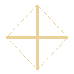

TAP TO ENTER

00Fourteen ages. One soul who writes them all. Walk from Eden to Hermon, from the Flood to Sinai, from the Bodhi tree to Golgotha, from the cave of Hira to the last page. You'll find the Bible, the lost books, the Qur'an, the Vedas, the sutras and the Granth along the way.
You have walked through Eden, stood among the Watchers on Hermon, and survived the Flood. Eleven more ages wait: Abraham, Egypt, David, Babylon, the East, Judea, Galilee, Patmos, Alexandria, Hira and the Library of Every Book.
Unlock the full life of the Scribe — one time, $4.99. Every chapter, every ending, all 80 Codex scrolls.